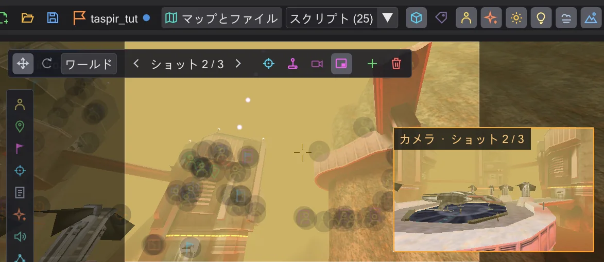

BehavEd でできること
プログラム全体のツアー。スクリプトの作成、マップ上での確認、カメラ、キャラクター、アニメーション、ミッション、そして周辺のツールを紹介します。
BehavEd-Remake は ICARUS スクリプトを書きます。Jedi Academy とその MOD のあらゆるカットシーン、あらゆるスクリプト演出の裏にあるスクリプトです。Raven のオリジナル BehavEd とファイル単位でまったく同じように書き出し、そのうえで何が起こるかを見せてくれます。マップ上で、3D で、時間に沿って。以下の各セクションから、その内容を練習するチュートリアルへ移動できます。
オリジナルと同じようにスクリプトを書く#

- ゲームの全コマンドが 1 つの一覧に。ダブルクリック、ドラッグ、または Insert で追加します。コマンドを追加する 3 つの方法
- 値ごとに専用の欄があります。使える値のリスト、マップから選ぶ名前、再生して確かめられるサウンド、
get・tag・randomを使った式。コマンドの値を変える - コピー、移動、コメントアウト。すべての操作を元に戻せ、履歴の途中にある 1 ステップだけを取り消すこともできます。行の移動・コピー・コメント化、何でも元に戻す。途中の 1 手順だけでも
- ゲームが実行する
.ibiにコンパイルします。わかりやすいメッセージから問題の行へジャンプできます。コンパイルとエラーの修正 - すべてのコマンドと
SET_項目の解説:すべてのコマンド。
同じスクリプトを 3 つのビューで#


クラシック はオリジナルのツリーです。グラフ はミッションをノード(プレイヤー開始位置、スクリプトランナー、キャラクター、スクリプト)として表示し、ドラッグでつなげられます。トラック はスクリプトを時間に沿って並べ、カメラ、各キャラクター、セリフをそれぞれの行に表示します。スクリプトの流れ:クラシック・グラフ・トラック、キャラクターをスクリプトにつなぐ
ゲームと同じ描画の 3D マップ#

マップはゲームの .pk3 ファイルから直接読み込まれ、シェーダー、ライトマップ、フォグ、グロー、エフェクト、スカイポータル、鏡もそのまま表示されます。中を飛び回り、上から見下ろし、視点を数字キーに保存できます。タイルでエンティティを配置し、グリッド上でドラッグ・回転し、インスペクターですべてのキーを編集します。マップ、エンティティの配置・移動・回転、エンティティのキーを編集する、マップを上から見る
見えて、飛ばせるカメラ#
 アニメーション
アニメーションcamera ( MOVE ) と PAN はそれぞれ、パス付きのショットとしてマップ上に表示されます。ギズモでショットを移動・回転したり、今見ている位置に置いたり、ショットの中に入って操縦モードで飛ばしたりできます。ズーム、フェード、揺れ、追従はゲームとまったく同じようにビューで再生されます。カメラ、カメラショットを自分で飛ばす、見ている場所にショットを置く、ズーム、黒へのフェード、揺れ
パスに沿って歩くキャラクター#

キャラクターは本物のモデルとアニメーションで出現し、スクリプトが指示した場所へ歩きます。パスにはハンドルがあり、移動先のドラッグ、歩く途中への点の挿入、歩き・走り・後ろ歩きの切り替え、キャラクターがどこを見てどちらを向くかの設定ができます。キャラクターと道、歩く、走る、後ろ向きに歩く、キャラクターに誰かを見させる、ある時点でキャラクターの向きを変える
シーン全体のタイムライン#
 アニメーション
アニメーションシーンを音付きで、好きな速度で再生します。各コマンドは時間上のブロックです。ドラッグすると後ろのものもすべて一緒に動き、端をドラッグすると長さが変わります。タイムライン、タイムラインでカットシーンのタイミングを直す
アニメーション:move コマンドと ROFF ファイル#
 アニメーション
アニメーションドア、プラットフォーム、船に時間に沿ったキーを設定します。behaved はそれを move コマンドとして書くか、ROFF ファイルを作成します。ゲーム自体の ROFF ファイルも編集できるキーに変換します。コピーとして扱うので、オリジナルには一切触れません。可動物のアニメーションと ROFF ファイル、5 · 船が離陸する、開くドア、ゲームの ROFF ファイルを変更する
ミッション:ゼロから .pk3 まで#

どのマップでもワンクリックでミッションを始められ、ゲームや MOD のミッションを開いて、そのフォルダーから続きを作れます。ミッションを保存 はすべてをチェックし、すべてのスクリプトをコンパイルして、マップ・エンティティ・スクリプト・ROFF ファイルを 1 つの .pk3 にまとめます。そのまま devmap で使えます。NPC ウェイポイントのネットワークもその過程で作成・チェックされます。ミッション、自分だけのミッション:Taspir からの離陸、NPC に歩く道を与える
キャラクターモデルとアニメーション#

ゲームの全キャラクターをスキン付きで、全アニメーションをフレーム付きで。クリックで再生、ダブルクリックでスクリプトに入れます。モデルビューとキャラクター、キャラクターにアニメーションを再生させる、キャラクターモデルを見る
周辺のツール#
- 1 つのスクリプト、または開いているすべてのスクリプトで検索と置換。開いているすべてのスクリプトで検索・置換
- タブ、ブックマーク、分割ビューで、スクリプトを比較したりスクリプト間でコピーしたりできます。ブックマークと分割表示
- 保存のたびにバックアップ、バックアップフォルダー、どのコマンドも元の状態に戻せます。保存・コンパイル・チェック
- 4 つの言語、6 つのテーマ、自由なインターフェースサイズ、すべてのショートカットを割り当て直し可能。設定とアップデート、キーボードショートカット
- アップデートを確認してインストールします。アップデートと変更履歴